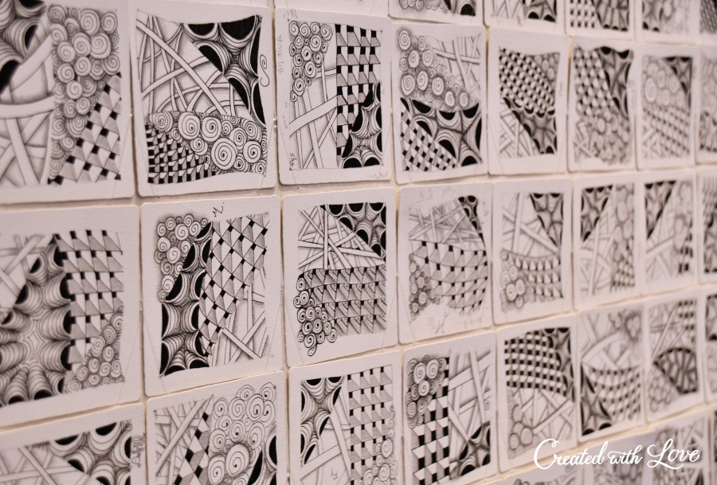
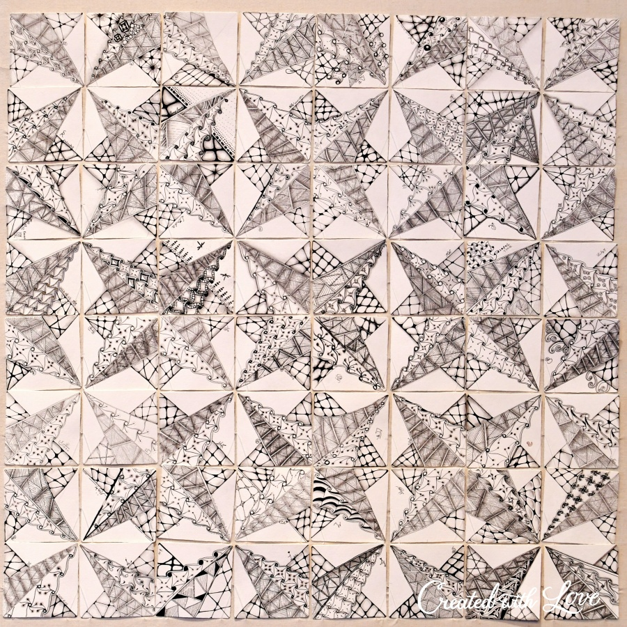
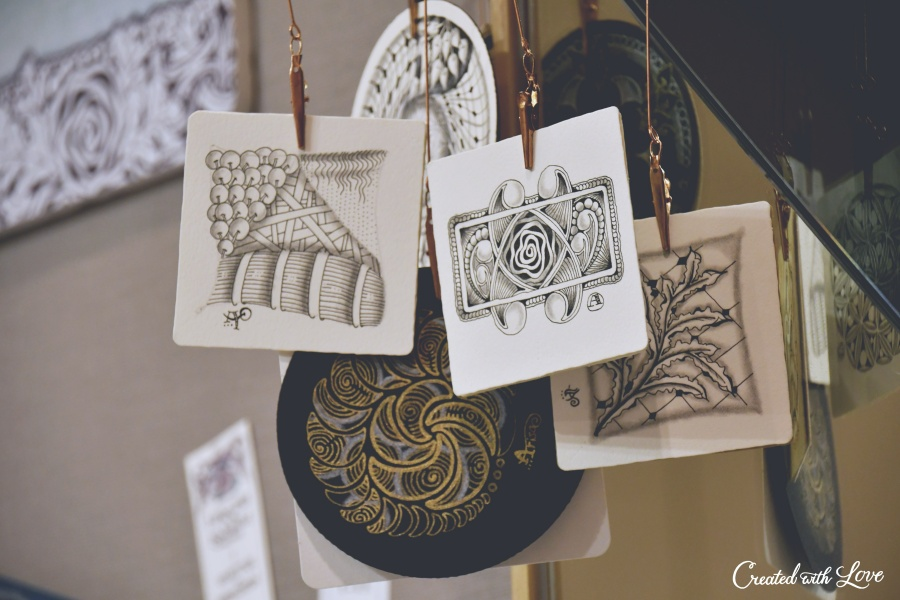

|
歡迎CZT-Asia #15加入Zentangle®大家庭
讓我們歡迎CZT-Asia Seminar 15 的CZT們加入Zentangle®全球大家庭！
在這次的活動中，總共有66位來自台灣的禪繞愛好者，和我們齊聚台北，共創一段美好的禪繞時光。
CZT-Asia Seminar 15 是2020年度全球首場舉辦的Seminar活動，在這個特殊的大環境中，禪繞愛好者們能夠彼此相聚、學習、分享與交流，這是多麼難得可貴的際遇與緣分。
一切從「感恩與感謝」開始，揭開了CZT-Asia #15的序幕！
在這四天三夜的課堂中，由好心藝的教學團隊：Sam、Barbara、Elaine、Poni以及Shaochi，全程以中文的方式，引領大家輕鬆地進入美好的禪繞世界中。
每位CZT無論是否剛接觸亦或是已學習禪繞Zentangle一段時間，都和我們一起回歸最初，從頭開始，不疾不徐地循序漸進。
我們共同沈浸在滿滿的創作泉源中，時而會神聆聽精彩豐富的禪繞故事，時而潛神默思蘊藏在禪繞畫方法裡的哲思，享受禪繞帶來專注又放鬆的體驗。
在禪繞Zentangle®中，有一個重要且精彩的環節非Mosaic莫屬！

在每位CZT完成創作後，我們會將作品集中並排列成Mosaic，透過作品的結集，讓CZT彼此欣賞與交流，啓發和激蕩出更多的創意靈感。 同時這也是一個感謝自己、感謝他人的契機，因為有了彼此才讓我們擁有了這一幅幅巨大且獨一無二的美麗Mosaic。

在教室一隅，我們有規劃一處CZT藝廊，讓所有CZT們可以盡情地展示她們精彩紛呈的禪繞延伸藝術作品。
這個特殊的時期，餐點的部分我們安排了以便當為主的服務，旨在為CZT們提供安全、放鬆又愜意的午、晚餐體驗；
課程中間的休息時段是一個很棒的CZT交流時間，大家可以一邊享用可口的點心、茶飲，一邊結識來自各个地方的CZT們。
與此同時，Zentangle Store 也敞開大門歡迎各位CZT們來走走逛逛，除了可以購買所需的材料之外，CZT們也可以在這裡進一步認識、瞭解和試用禪繞Zentangle®的官方材料，親自感受這些高品質的官方材料帶來的繪畫體驗。

在活動的第三天晚上，好心藝特別邀請Zentangle®的創辦人Rick & Maria透過線上直播的方式與大家見面！
當天，Rick和Maria也和我們分享了許多自己創造出來的禪繞家飾品，以及許多來自生活中的創意靈感。讓我們再次感謝Rick＆Maria跟我們一起連線分享和互動！
最後，誠摯地感謝每一位前來參與的CZT，和我們一起創造並擁有了這一段深刻、美妙且難得可貴的回憶。
讓我們一起將禪繞畫方法（Zentangle Method）帶到各自的領域當中，讓更多人體驗到禪繞Zentangle®所帶來的平靜與美好，將禪繞帶進日常，妝點生活，人人都是藝術家。
|